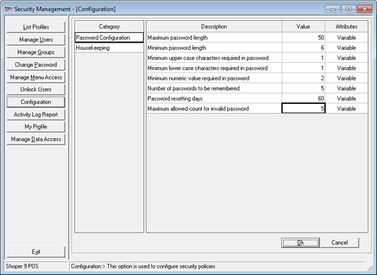
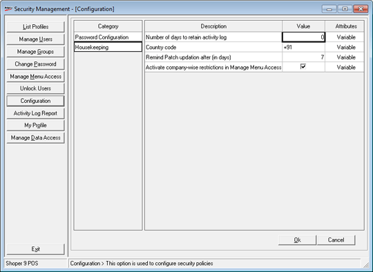

This option is used to configure different options in security management.
How to reach: Setup > Supervisory Functions > Security Management
On clicking Configuration, the Security Management – Configuration window is displayed.

Password Configuration:You will be able to define password structure of the users in this window.
Housekeeping: You will be able to configure housekeeping activities required for security management in this window.

Number of days to retain activity log: Enter the number of days up to which the activity log has to be retained.
Country code: Enter the country code.+91 appear by default. Change if required.
Remind Patch updation after (in days): Enter the number of days after which Shoper 9 patch updation to be reminded.
Activate company-wise restrictions in Manage Menu Access: Select to activate company-wise menu restrictions in Manage Menu Access
Number of custom reports in menu screen: Enter the number of custom reports to be displayed on the main menu of Shoper 9.
Refresh interval of the custom reports (in seconds): Enter the time period to refresh the custom reports to display the real time data.